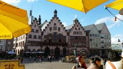
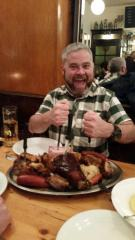

2015-10-09
The Package
"Have you packed everything in your case sir?"
*GULP*
It's 4am and I'm standing at the check in desk at Bristol airport... an unusual setting for kicking off a Jimbotours as for the first time in 9 years I haven't awoken mildly hungover at Highbury Gardens in East London opting to travel direct this year. This news I feel hasn't been well received at JT HQ - they are not fans of change nor breaking with tradition.
Why do I have this sneaking suspicion? Well... one cryptic post on this very blog earlier this week and a random package arriving at my house shortly afterwards which now resides in my hand luggage and for the first time in my touring career I find myself preparing to lie to the check in clerk.... "Yes... All packed by yours truly..." technically not a lie.
You see Jimbotours has always been shrouded in mystery it's part of the design that has kept us going for near on a decade and as such having to let me know our destination a day or two in advance rather than a minute or two before boarding I believe has got the mischievous juices flowing in our Jimbo... hence "the package".
Shuffling abaord the familiar budget airline I'm racking my brains at what sits within my hand luggage stowed neatly above my head....
Custom made Lederhosen to fit in with the German natives?
The blue print for the next 10 years Jimbotours?
Johnny O'Donnell? No one's seen him in years on a JT...
Stevie B's dirty Return Of The Jedi undies?
Or my worst nightmare....
Some form of German wild goose chase designed to have me trek around West Germany to punish me for breaking with tradition? I only skipped a walking tour last year and my punishment for that far outweighed the crime in my humble opinion (see last year's final blog)
My speculation is ultimately wasted... for as always on these trips I am but a passenger on Jimbos masterplan. Sit back & relax.... Oh and no I don't want a fucking charity scratch card!
***The above was written at Bristol airport... The following was written live on scene in Germany... Genuinely****
I arrive in Germany.... find the nearest quiet spot and open the dreaded package.... My worst fears are doubly confirmed as I open "the packge" a cryptic wanker letter AND Lederhosen... The bastard. In short I must chuck on my local garms, order a shot of Jager, upload onto the website (see for yourself) and then and ONLY then will I be given further instructions..... Joy.
1 hour passes. No instructions. Jimbos phones off. Suddenly this now tipsy Lederhosen dressed knobhead is fearing he is the centre of the world's biggest wind up. Enter a Lederhosen cladded Stephen Brankin.....
Steve like me is somewhat confused with the mornings events having received similar instructions.... when we are instructed to make out way to Frankfurt centre and O'Reillys bar where a barman would provide us new instructions..... After a very awkward interaction with said barman enter Jimbo.... let the tour commence. All this pre 10am... Gonna be a hectic weekend.
Frankfurt be gentle with me.... I'm a middle aged father these days! Jimbotours 9... Let's be having you! Wish me luck....
Shauny G
Photographs


{kind=link}
{kind=link}


{kind=link}
